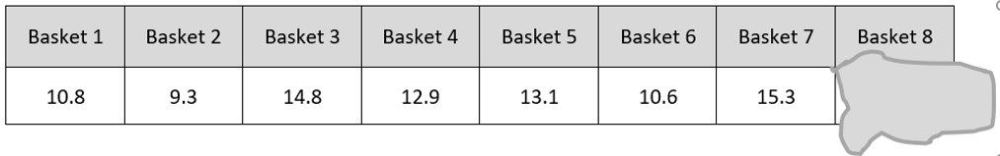
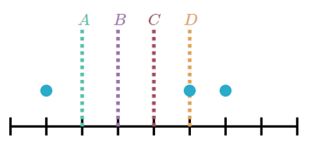
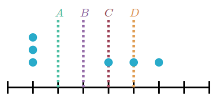
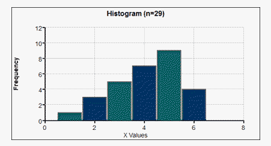
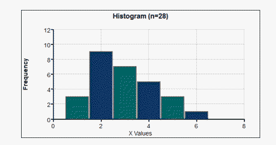
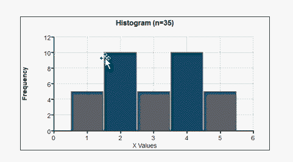
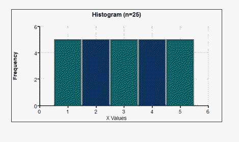
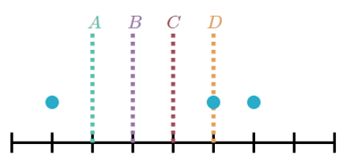

Unit 1 Describing Data
2.3 Measures of Central Tendency
Mean, Median, Mode, Midrange
Notation:
\(\sum\) denotes the sum of a set of values
\(x\) is the variable usually used to represent the individual data values
\(n\) represents the number of data values in a sample
\(N\) represents the number of data values in a population
Arithmetic Mean:
Mean of a Sample (this is a statistic) \(\overline{x}=\frac{\sum x}{n}\)
Mean of a Population (this is a parameter) \(\mu=\frac{\sum x}{N}\)
Median:
- The middle value
- Position of the Median: \(P_{50}=\frac{n+1}{2}\)
- Advantage: Is not affected by an extreme value
Mode:
- Mode: most often
- Bimodal: 2 modes
- Multimodal: 3+ modes
- No Mode: no data repeated
- Advantage: The only measure of central tendency that can be used with nominal data.
MidRange:
- The mean of the max and min values in the original data set
- Midrange=\(\frac{\left(x_{\min }+x_{\max }\right)}{2}\)
- Advantage:Very easy to compute
- Disadvantage:Sensitive to extremes so rarely used
Round off Rule for Measures of Center:
Carry one more decimal place than is present in the original set of values.
- Calculate the measures of central tendency for the life expectancies from the given data. Verify using technology.
Country Health $ per capita Obesity % Life expectancy Universal Healthcare Canada 5292 30.1 82 yes China 420 7.3 76 no Germany 5411 22.7 81 yes Italy 3258 23.7 84 yes Japan 3703 3.5 84 yes Mexico 677 27.6 77 no Norway 9522 24.8 82 yes Switzerland 9674 21 83 yes United Kingdom 3377 29.8 82 yes United States 9403 35 79 no
- Mean:
81 - Median:
82 - Position of the Median:
\(\frac{n+1}{2}=\frac{10+1}{2}=5.5\) - Mode:
82 - Midrange:
\(\frac{76+84}{2}=80\)
- Mean:
- Using the table in the problem above, calculate the measures of central tendency for the obesity percentages from the given data. Verify using technology.
- Mean:
22.55 - Median:
24.25 - Position of the Median:
\(\frac{n+1}{2}=\frac{10+1}{2}=5.5\) - Mode:
none - Midrange:
\(\frac{3.5+35}{2}=19.25\)
- Mean:
- What do you notice about the measures for the 2 sets of data?
- Shanita made a note of the weights of 8 baskets of fruit, but she spilled coffee on the fruit and the last number got smudged. If the average weight of the baskets is 12.5 pounds, how much was the smudged number? In other words, how much did the 8th basket of fruit weigh?
Sum of basket weights is 8*12.5 = 100, so basket 8 must be 100 – 86.8 = 13.2
- The mean weight of three dogs is 60 pounds. Which of the following is possible? (Answer yes or no.)
- One of the dogs weighs 100 pounds.
yes - None of the dogs weighs more than 60 pounds.
yes - Each dog weighs less than 60 pounds.
no - The dogs weigh 25, 55, and 110 pounds.
no - The dogs weigh 24, 52, and 104 pounds.
yes - Altogether the dogs weigh 180 pounds.
yes
- One of the dogs weighs 100 pounds.
- The mean can alternately be defined as the balancing point. Total distance below the mean = total distance above the mean. The mean of 2, 3, 6, and 9 is 5. Note that 3 + 2 = 1 + 4.
![A number line segment numbered 1 to 9, counting by 1. There is a dot above the 2,3,6 and 9. There is a dotted line segment drawn vertically at the 5. 'The mean' is written above the dotted line. There is one ray drawn above the number line from the dotted line to the left that ends at the 2 and has the number 3 written above it. There is another ray drawn from the dottend line to the left that ends at the 3 and has a 2 written above it. There is a ray drawn above the number line from the dotted line to the right that ends at the 9 and has the number 4 written above it. There is another ray drawn above the number line from the dotted line to the right that ends at the 6 and has the number 1 written above it.](images/u1s6p6.png)
- Which of the lines represents the mean of the data points shown below.

C
- Which of the lines represents the mean of the data points shown below.

B
- Symmetric (Normal):
Mean and Median are the same as Mode
![A picture of a histogram and a picture of a curve drawn around the histogram with the bars removed. The histogram is labeled 'Histogram (n=21)'.The horizontal axis represents the x values and goes from 0 to 6, counting by 1. The vertical axis represents the frequency and goes from 0 to 10, counting by 2. The bar at 1 has a frequency of 2. The bar at 2 has a frequency of 5. The bar at 3 has a frequency of 7. The bar at 4 has a frequency of 5. The bar at 5 has a frequency of 2. The horizontal axis for the curve represents the x values and goes from 1.5 to 7.5, counting by 1. There is no vertical axis and the curve is a normal bell shaped curve.](images/u1s6p3a.png)
- Skewed To The Left (negatively skewed):
Mean and Median are to the LEFT of the Mode (Left Tail)
 - Skewed To The Right (positively skewed):
Mean and Median are to the RIGHT of the Mode (Right Tail)
 - Bimodal:
Two Modes
 - Uniform:
All frequencies are the same

Shapes of Distributions
Weighted Means and Means of Grouped Data
Calculating by Formula:
\(\overline{x}=\frac{\sum(f \cdot x)}{\sum f} \quad\quad \text{Use class midpoints for x}\) - Which of the lines represents the mean of the data points shown below.

- Find the mean of the following data:
SECONDS FREQUENCY MIDPOINTS 5.0 – 5.9 5 5.45
6.0 – 6.9 8 6.45
7.0 – 7.9 10 7.45
8.0 – 8.9 7 8.45
9.0 – 9.9 3 9.45
- What is the estimated mean of the data?
7.30 By Formula: \(\overline{x}=\frac{\sum(f \cdot x)}{\sum f}=\frac{5(5.45)+8(6.45)+10(7.45)+7(8.45)+3(9.45)}{33}=\frac{240.85}{33} \approx 7.30\)
- What is the upper limit of the 4th class?
8.9 - What is the upper boundary of the 4th class?
8.95 - What is the class width?
1.0 - What is the shape of the distribution?
Normal - What class holds the median number of seconds?
7.0-7.9
- What is the estimated mean of the data?
- Find the Mean of the following data:
FREQUENCY DISTRIBUTION NUMBER MIDPOINTS 10 - 14 1 12 15 - 19 2 17 20 - 24 7 22 25 - 29 15 27 30 - 34 4 32
- What is the estimated mean of the data?
25.3 - What is the upper limit of the 1st class?
14 - What is the upper boundary of the 3rd class?
24.5 - d) What is the class width?
5 - Using LCL
15-10=5 - Using UCL
29-24=5 - Using midpt
32-27=5
- Using LCL
- What is the shape of the distribution?
Left tail - What class holds the median number of seconds?
25-29 Position of the median: \(\frac{n+1}{2}=\frac{29+1}{2}=\frac{30}{2}=15\) Add frequencies until you reach 15
- What is the estimated mean of the data?